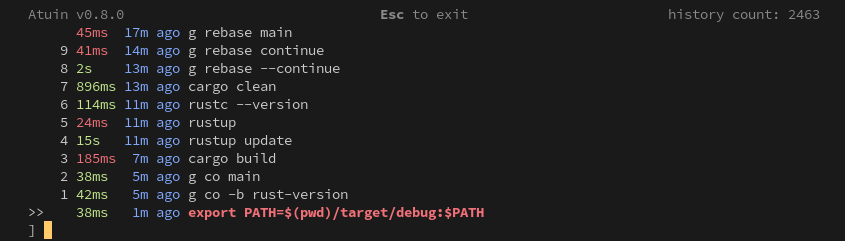
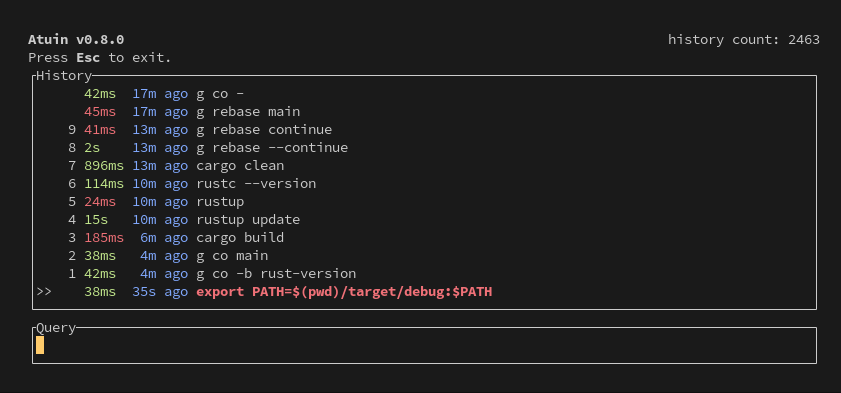

Config
Atuin maintains two configuration files, stored in ~/.config/atuin/. We store data in ~/.local/share/atuin (unless overridden by XDG_*).
The full path to the config file would be ~/.config/atuin/config.toml
The config location can be overridden with ATUIN_CONFIG_DIR
db_path
Default: ~/.local/share/atuin/history.db
The path to the Atuin SQLite database.
key_path
Default: ~/.local/share/atuin/key
The path to the Atuin encryption key.
session_path
Default: ~/.local/share/atuin/session
The path to the Atuin server session file. This is essentially just an API token
dialect
Default: us
This configures how the stats command parses dates. It has two possible values
or
auto_sync
Default: true
Configures whether or not to automatically sync, when logged in.
update_check
Default: true
Configures whether or not to automatically check for updates.
sync_address
Default: https://api.atuin.sh
The address of the server to sync with!
sync_frequency
Default: 1h
How often to automatically sync with the server. This can be given in a "human-readable" format. For example, 10s, 20m, 1h, etc.
If set to 0, Atuin will sync after every command. Some servers may rate limit very frequent syncs, but this won't cause any issues.
search_mode
Default: fuzzy
Which search mode to use. Atuin supports "prefix", "fulltext", "fuzzy", "daemon-fuzzy", and "skim" search modes.
Prefix mode searches for "query*"; fulltext mode searches for "*query*"; "fuzzy" applies the fuzzy search syntax; "skim" applies the skim search syntax.
daemon-fuzzy search mode
The "daemon-fuzzy" mode is new as of Atuin 18.13. This search mode uses an in-memory index, stored in the daemon, to perform fast and customizable searches.
To use the new "daemon-fuzzy" mode, enable the daemon, set autostart to true (unless you manage its lifecycle yourself), and set the search mode:
You can customize the priority given to frequency, recency, and frecency scores in this mode. See the score multipliers section for more information.
fuzzy search syntax
The "fuzzy" and "daemon-fuzzy" search syntax is based on the fzf search syntax.
| Token | Match type | Description |
|---|---|---|
sbtrkt | fuzzy-match | Items that match sbtrkt |
'wild | exact-match (quoted) | Items that include wild |
^music | prefix-exact-match | Items that start with music |
.mp3$ | suffix-exact-match | Items that end with .mp3 |
!fire | inverse-exact-match | Items that do not include fire |
!^music | inverse-prefix-exact-match | Items that do not start with music |
!.mp3$ | inverse-suffix-exact-match | Items that do not end with .mp3 |
A single bar character term acts as an OR operator. For example, the following query matches entries that start with core and end with either go, rb, or py.
Bar not supported in daemon-fuzzy
The "daemon-fuzzy" search mode does not currently support the bar character operator.
filter_mode
Default: global
The filter mode that interactive search starts in. Accepted values are global, host, session, directory, workspace, and session-preload — see Filter mode for what each one searches.
Whichever mode you start in, you can still cycle through the rest with ctrl-r.
search_mode_shell_up_key_binding
Atuin version: >= 17.0
Default: fuzzy
The default searchmode to use when searching and being invoked from a shell up-key binding.
Accepts exactly the same options as search_mode above
Defaults to the value specified for search_mode.
filter_mode_shell_up_key_binding
Default: global
The default filter to use when searching and being invoked from a shell up-key binding.
Accepts exactly the same options as filter_mode above
Defaults to the value specified for filter_mode.
inline_height_shell_up_key_binding
The maximum number of lines the interface should take up when atuin is invoked from a shell up-key binding.
The accepted values are identical to those of inline_height.
When unset, the value from inline_height is used.
workspaces
Atuin version: >= 17.0
Default: false
This flag enables a pseudo filter-mode named "workspace": the filter is automatically activated when you are in a git repository.
With workspace filtering enabled, Atuin will filter for commands executed in any directory within a git repository tree.
Filter modes can still be toggled via ctrl-r.
style
Default: compact
Which style to use. Possible values: auto, full and compact.
compact:

full:

With auto, Atuin uses full mode, but automatically switches to compact mode when the terminal window is too short for full to display properly.
invert
Atuin version: >= 17.0
Default: false
Invert the UI - put the search bar at the top.
inline_height
Default: 40
Set the maximum number of lines Atuin's interface should take up.
If set to 0, Atuin will always take up as many lines as available (full screen).
show_preview
Default: true
Configure whether or not to show a preview of the selected command.
Useful when the command is longer than the terminal width and is cut off.
max_preview_height
Atuin version: >= 17.0
Default: 4
Configure the maximum height of the preview to show.
Useful when you have long scripts in your history that you want to distinguish by more than the first few lines.
show_help
Atuin version: >= 17.0
Default: true
Configure whether or not to show the help row, which includes the current Atuin version (and whether an update is available), a keymap hint, and the total amount of commands in your history.
show_tabs
Atuin version: >= 18.0
Default: true
Configure whether or not to show tabs for search and inspect.
auto_hide_height
Atuin version: >= 18.4
Default: 8
Hide extra UI lines when the available height falls below this number of rows. This has no effect except when compact style is being used (see style above), and currently applies to only the interactive search and inspector. It can be turned off entirely by setting to 0.
exit_mode
Default: return-original
What to do when the escape key is pressed when searching
| Value | Behaviour |
|---|---|
| return-original (default) | Set the command-line to the value it had before starting search |
| return-query | Set the command-line to the search query you have entered so far |
Pressing ctrl+c or ctrl+d will always return the original command-line value.
history_format
The default format used by history list. It can also be specified per invocation with the --format arg, which takes precedence over this config value.
More on history list
history_filter
The history filter allows you to exclude commands from history tracking - maybe you want to keep ALL of your curl commands totally out of your shell history, or maybe just some matching a pattern.
This supports regular expressions, so you can hide pretty much whatever you want!
## Note that these regular expressions are unanchored, i.e. if they don't start
## with ^ or end with $, they'll match anywhere in the command.
history_filter = [
"^secret-cmd",
"^innocuous-cmd .*--secret=.+"
]
cwd_filter
The cwd filter allows you to exclude directories from history tracking.
This supports regular expressions, so you can hide pretty much whatever you want!
## Note that these regular expressions are unanchored, i.e. if they don't start
## with ^ or end with $, they'll match anywhere in the path.
# cwd_filter = [
# "^/very/secret/directory",
# ]
After updating that parameter, you can run the prune command to remove old history entries that match the new filters.
store_failed
Atuin version: >= 18.3.0
Default: true
Configures whether to store commands that failed (those with non-zero exit status) or not.
secrets_filter
Atuin version: >= 17.0
Default: true
Matches each command against a set of built-in regular expressions, and refuses to save it if any of them match. The patterns currently cover:
| Service | Matches |
|---|---|
| AWS | Access key IDs, and commands setting AWS_SECRET_ACCESS_KEY or AWS_SESSION_TOKEN |
| Azure | Commands setting AZURE_*_KEY |
| Google Cloud | Commands setting GOOGLE_SERVICE_ACCOUNT_KEY |
| GitHub | Personal access tokens (old and new), OAuth access tokens (app and user), app installation tokens, and refresh tokens |
| GitLab | Personal access tokens |
| Slack | OAuth v2 bot and user tokens, and webhook URLs |
| Stripe | Live and test keys |
| Netlify | Authentication tokens |
| npm | Tokens |
| Pulumi | Personal access tokens |
| Atuin | atuin login, which takes your password and encryption key as arguments |
For the exact expressions, see secrets.rs.
Note
This is a safety net, not a guarantee. It only catches credentials in recognized formats — use history_filter for anything else you need kept out, and see Excluding Commands from History.
macOS Ctrl-n key shortcuts
Default: true
macOS does not have an Alt key, although terminal emulators can often be configured to map the Option key to be used as Alt. However, remapping Option this way may prevent typing some characters, such as using Option+3 to type # on the British English layout. For such a scenario, set the ctrl_n_shortcuts option to true in your config file to replace Alt+0 to Alt+9 shortcuts with Ctrl+0 to Ctrl+9 instead:
show_numeric_shortcuts
Atuin version: >= 18.9
Default: true
Whether to show numeric shortcuts (1..9) beside list items in the TUI. Set this to false to hide the moving numbers if you find them distracting.
network_timeout
Atuin version: >= 18.0
Default: 30
The max amount of time (in seconds) to wait for a network request. If any operations with a sync server take longer than this, the code will fail - rather than wait indefinitely.
network_connect_timeout
Atuin version: >= 18.0
Default: 5
The max time (in seconds) we wait for a connection to become established with a remote sync server. Any longer than this and the request will fail.
extra_headers
Default: {}
Extra HTTP headers to send on every request to the sync server. This is useful when a self-hosted server sits behind a proxy or access gateway that requires its own authentication header — for example Cloudflare Access.
Headers that Atuin sets itself (such as Authorization) cannot be overridden; Atuin's values always win.
To avoid leaking credentials, Atuin refuses to follow cross-origin redirects when extra headers are configured — they are never sent to an origin other than the one you configured.
local_timeout
Atuin version: >= 18.0
Default: 5
Timeout (in seconds) for acquiring a local database connection (sqlite).
command_chaining
Atuin version: >= 18.8
Default: false
Allows building a command chain with the && or || operator. When enabled, opening atuin will search for the next command in the chain, and append to the current buffer.
enter_accept
Atuin version: >= 17.0
Default: false
When set to true, Atuin will default to immediately executing a command rather than the user having to press enter twice. Pressing tab will return to the shell and give the user a chance to edit.
This technically defaults to true for new users, but false for existing. We have set enter_accept = true in the default config file. This is likely to change to be the default for everyone in a later release.
keymap_mode
Atuin version: >= 18.0
Default: emacs
The initial keymap mode of the interactive Atuin search (e.g. started by the keybindings in the shells). There are four supported values: "emacs", "vim-normal", "vim-insert", and "auto". The keymap mode "emacs" is the most basic one. In the keymap mode "vim-normal", you may use K and J to navigate the history list as in Vim, whilst pressing
I changes the keymap mode to "vim-insert". In the keymap mode "vim-insert", you can search for a string as in the keymap mode "emacs", while pressing Esc switches the keymap mode to "vim-normal". When set to "auto", the initial keymap mode is automatically determined based on the shell's keymap that triggered the Atuin search. "auto" is not supported by NuShell at present, where it will always trigger the Atuin search with the keymap mode "emacs".
keymap_cursor
Atuin version: >= 18.0
Default: (empty dictionary)
The terminal's cursor style associated with each keymap mode in the Atuin search. This is specified by a dictionary whose keys and values being the keymap names and the cursor styles, respectively. A key specifies one of the keymaps from emacs, vim_insert, and vim_normal. A value is one of the cursor styles, default or {blink,steady}-{block,underline,bar}. The following is an example.
If the cursor style is specified, the terminal's cursor style is changed to the specified one when the Atuin search starts with or switches to the corresponding keymap mode. Also, the terminal's cursor style is reset to the one associated with the keymap mode corresponding to the shell's keymap on the termination of the Atuin search.
prefers_reduced_motion
Atuin version: >= 18.0
Default: false
Enable this, and Atuin will reduce motion in the TUI as much as possible. Users with motion sensitivity can find the live-updating timestamps distracting.
Alternatively, set env var NO_MOTION
search
filters
Atuin version: >= 18.4
The list of filter modes available in interactive search, in the order they cycle through when you press ctrl-r. By default, all modes are enabled. Removing a mode from this list disables it entirely. The workspace mode is skipped when not in a git repository or when workspaces = false. See Filter mode for a description of each mode.
The filter_mode setting selects the initial mode from this list. If filter_mode is set to a mode not in the list, the first available mode is used instead.
Score multipliers
For the "daemon-fuzzy" search mode, you can control the scoring of matched items. The system scores matches based on three numbers: frequency, recency, and frecency:
- Frequency — how often this exact match has been run, with diminishing returns
- Recency — how recently this exact match was last run
- Frecency — a combination of frequency and recency
The frecency calculation is Recency Score * Recency Multiplier + Frequency Score * Frequency Multiplier. By changing the options below, you can customize the relative importance of each part of the score calculation.
For each setting, a value of 1.0 (the default) means the score is used as-is. Values less than 1.0 decrease that score's influence, and values greater than 1.0 increase that score's influence.
So, for example, if you cared a lot about how frequently you run a command but not as much how recently, you could set frequency_score_multiplier to 10.0 and recency_score_multiplier to 0.1.
daemon-fuzzy mode only
The score multiplier settings shown here only work with the "daemon-fuzzy" search mode.
frequency_score_multiplier
Default: 1.0
The multiplier to apply to the frequency score in the frecency calculation. Setting this to 0 disables the frequency portion of the frecency scoring altogether.
recency_score_multiplier
Default: 1.0
The multiplier to apply to the recency score in the frecency calculation. Setting this to 0 disables the recency portion of the frecency scoring altogether.
frecency_score_multiplier
Default: 1.0
The multiplier used for the final frecency score. Setting this to 0 disables frecency scoring altogether, relying solely on the fuzzy matcher's score.
Example:
search_mode = "daemon-fuzzy"
[daemon]
enabled = true
autostart = true
[search]
recency_score_multiplier = 10.0
frequency_score_multiplier = 0.8
frecency_score_multiplier = 2.0
Filtering by author
Interactive search shows only commands you ran yourself, hiding those recorded by AI coding agents through agent hooks. This is not currently configurable in config.toml.
To filter by author on the command line, use atuin search --author. See Filtering by Author for the available values.
Stats
This section of client config is specifically for configuring Atuin stats calculations
common_subcommands
Default:
common_subcommands = [
"apt",
"cargo",
"composer",
"dnf",
"docker",
"git",
"go",
"ip",
"jj",
"kubectl",
"nix",
"nmcli",
"npm",
"pecl",
"pnpm",
"podman",
"port",
"systemctl",
"tmux",
"yarn",
]
Configures commands where we should consider the subcommand as part of the statistics. For example, consider kubectl get rather than just kubectl.
common_prefix
Atuin version: >= 17.1
Default:
Configures commands that should be totally stripped from stats calculations. For example, 'sudo' should be ignored.
dotfiles
Atuin version: >= 18.1
Default: false
To enable sync of shell aliases between hosts.
Add the new section to the bottom of your config file, for every machine you use Atuin with
Manage aliases using the command line options
# Alias 'k' to 'kubectl'
atuin dotfiles alias set k kubectl
# List all aliases
atuin dotfiles alias list
# Delete an alias
atuin dotfiles alias delete k
After setting an alias, you will either need to restart your shell or source the init file for the change to take effect
keys
This section of the client config is specifically for configuring key-related settings.
scroll_exits
Atuin version: >= 18.1
Default: true
Configures whether the TUI exits, when scrolled past the last or first entry.
prefix
Atuin version: > 18.3
Default: a
Which key to use as the prefix. Prefix mode is a two-step shortcut system: you press Ctrl and the prefix key to enter prefix mode, then press a second key to trigger an action. For example, with the default prefix a, pressing Ctrl+A then D deletes the selected entry.
See the key binding page for the full list of default prefix shortcuts, or the advanced key binding page to customize them.
exit_past_line_start
Atuin version: >= 18.5
Default: true
Exits the TUI when scrolling left while the cursor is at the start of the line.
accept_past_line_end
Atuin version: >= 18.5
Default: true
The right arrow key performs the same functionality as Tab and copies the selected line to the command line to be modified.
accept_past_line_start
Atuin version: >= 18.9
Default: false
The left arrow key performs the same functionality as Tab and copies the selected line to the command line to be modified.
accept_with_backspace
Atuin version: >= 18.9
Default: false
The backspace key performs the same functionality as Tab and copies the selected line to the command line to be modified.
preview
This section of the client config is specifically for configuring preview-related settings. (In the future the other 2 preview settings will be moved here.)
strategy
Atuin version: >= 18.3
Default: auto
Which preview strategy is used to calculate the preview height. It respects max_preview_height.
| Value | Preview height is calculated from the length of the |
|---|---|
| auto (default) | selected command |
| static | longest command in the current result set |
| fixed | use max_preview_height as fixed value |
By using auto a preview is shown, if the command is longer than the width of the terminal.
tmux
When you are inside tmux, open the search UI in a popup floating above your current pane, instead of drawing over the pane itself. The popup opens in your current working directory, and closes when you accept a command or exit.
Atuin falls back to its normal rendering, with no error, whenever the popup can't be used — outside tmux, on tmux older than 3.2, or in a shell that doesn't support it.
Requirements
- tmux >= 3.2, which is where
display-popupgained the behavior Atuin needs - zsh, bash, or fish — nushell, xonsh, and PowerShell don't support the popup yet
These settings are read by atuin init and passed to the shell plugin through environment variables, so restart your shell after changing them. To disable the popup for a single session without touching your config, set ATUIN_TMUX_POPUP=false before Atuin's key bindings run.
enabled
Default: false
Whether to show the search UI in a tmux popup.
width
Default: "80%"
Width of the popup, passed to tmux display-popup -w. Accepts a percentage of the terminal width, or an absolute number of columns.
height
Default: "60%"
Height of the popup, passed to tmux display-popup -h. Accepts a percentage of the terminal height, or an absolute number of rows.
Daemon
Atuin version: >= 18.3
enabled
Default: false
Enable the background daemon
Add the new section to the bottom of your config file
autostart
Default: false
Automatically start and manage the daemon when needed. This is not compatible with systemd_socket = true. If a legacy experimental daemon is already running, restart it manually once before using autostart.
sync_frequency
Default: 300
How often the daemon should sync, in seconds
socket_path
Default:
Where to bind a unix socket for client -> daemon communication
If XDG_RUNTIME_DIR is available, then we use this directory instead.
pidfile_path
Default:
Path to the daemon pidfile used for process coordination.
systemd_socket
Default false
Use a socket passed via systemd socket activation protocol instead of the path
tcp_port
Default: 8889
The port to use for client -> daemon communication. Only used on non-unix systems.
logs
Atuin version: >= 18.13
Behavior of log files.
enabled
Default: true
Whether or not to enable file-based logging.
dir
Default: "~/.atuin/logs"
The directory in which to store log files.
level
Default: "info"
The logging level to use. Valid values are "trace", "debug", "info", "warn", and "error", in order of highest-to-lowest verbosity.
retention
Default: 4
How many days of log files to keep (per file type). Files older than this will be removed.
ai
A sub-object with specific options for AI logging:
enabled- whether to output AI logs; defaults tologs.enabledfile- the filename to use for the AI logs; defaults to"ai.log". Always relative tologs.dir.level- override the log level for the AI logs; defaults tologs.levelretention- how many days to store AI logs; defaults tologs.retention
daemon
A sub-object with specific options for daemon logging:
enabled- whether to output daemon logs; defaults tologs.enabledfile- the filename to use for the daemon logs; defaults to"daemon.log". Always relative tologs.dir.level- override the log level for the daemon logs; defaults tologs.levelretention- how many days to store daemon logs; defaults tologs.retention
search
A sub-object with specific options for search logging:
enabled- whether to output search logs; defaults tologs.enabledfile- the filename to use for the search logs; defaults to"search.log". Always relative tologs.dir.level- override the log level for the search logs; defaults tologs.levelretention- how many days to store search logs; defaults tologs.retention
theme
Atuin version: >= 18.4
The theme to use for showing the terminal interface.
name
Default: "default"
A theme name that must be present as a built-in (unset or default for the default, else autumn or marine), or found in the themes directory, with the suffix .toml. By default this is ~/.config/atuin/themes/ but can be overridden with the ATUIN_THEME_DIR environment variable.
debug
Default: false
Output information about why a theme will not load. Independent from other log levels as it can cause data from the theme file to be printed unfiltered to the terminal.
max_depth
Default: 10
Number of levels of "parenthood" that will be traversed for a theme. This should not need to be added in or changed in normal usage.
ui
Atuin version: >= 18.5
Configure the interactive search UI appearance.
columns
Default: ["duration", "time", "command"]
Columns to display in the interactive search, from left to right. The selection indicator (" > ") is always shown first implicitly.
Each column can be specified as: - A simple string (uses default width): "duration" - An object with type and optional width/expand: { type = "directory", width = 30 }
Available column types
| Column | Default Width | Description |
|---|---|---|
| duration | 5 | Command execution duration (e.g., "123ms") |
| time | 8 | Relative time since execution (e.g., "59m ago") |
| datetime | 16 | Absolute timestamp (e.g., "2025-01-22 14:35") |
| directory | 20 | Working directory (truncated if too long) |
| host | 15 | Hostname where command was run |
| user | 10 | Username |
| exit | 3 | Exit code (colored by success/failure) |
| command | * | The command itself (expands by default) |
Column options
- type: The column type (required when using object format)
- width: Custom width in characters (optional, uses default if not specified)
- expand: If
true, the column fills remaining space. Default istrueforcommand,falsefor others. Only one column should haveexpand = true.
Examples
# Minimal - more space for commands
columns = ["duration", "command"]
# With custom directory width
columns = ["duration", { type = "directory", width = 30 }, "command"]
# Show host for multi-machine sync users
columns = ["duration", "time", "host", "command"]
# Show exit codes prominently
columns = ["exit", "duration", "command"]
# Make directory expand instead of command
columns = ["duration", "time", { type = "directory", expand = true }, { type = "command", expand = false }]
syntax_highlight
Default: true
Syntax highlight commands in the search results, parsed with the grammar for the shell that ran them: bash/zsh/sh use the bash grammar, fish uses the fish grammar, and shells without a grammar (nu, xonsh, powershell) are shown unhighlighted. The selected row keeps its usual single highlight color.
The default colors are ANSI palette colors, so they automatically match your terminal's color scheme. They can also be customized via the Syntax* keys in a theme.
Not available on platforms where tree-sitter doesn't build (e.g. Windows); commands are shown unhighlighted there.
ai
The settings for Atuin AI are listed in a separate section.